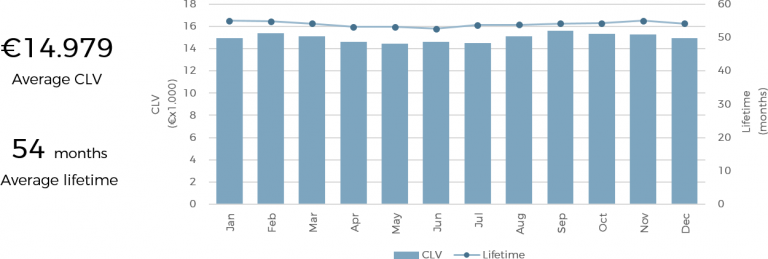
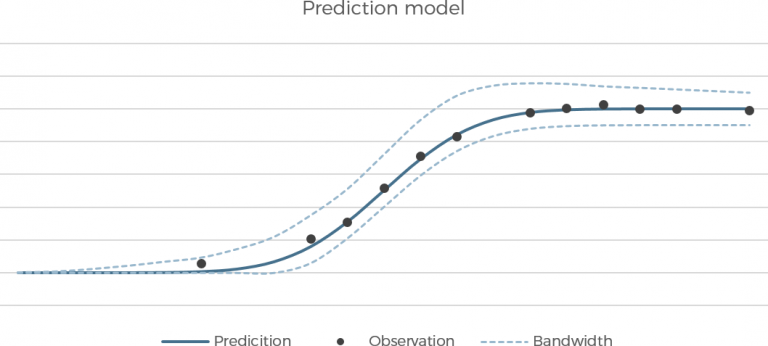

DATA ANALYTICS
GOAL
How can we make a recommendation system? How can we categorize our customers and take actions separately for each group? How can we identify objects based on specific characteristics? All these kind of questions can be answered by using data analytics techniques.
RESULT
By using statistics, programming and machine learning techniques, I can find patterns hidden in the data. With this information I can make an algorithm, probability estimation or statistical model which you can use to make the right decisions.
CASE WHICH CUSTOMERS ARE LIKELY TO CHURN?
The ability to predict when a customer is at a high risk of churning is valuable for every business with returning customers. Churn is defined as the number of customers cancelling within a time period divided by the number of active customers at the start of that period. In order to apply a modeling technique to predict churn, we need to understand the customer behavior and characteristics which signal the risk of customers churn.
Customer characteristics
* Age of a person
* Number of people in household
Behavioral characteristics
* Average amount of electricity spend per month
* Time since sign up

WHAT IS THE CUSTOMER LIFETIME VALUE FOR EACH CUSTOMER?
Another calculation which supports the churn prediction is to calculate the customer lifetime value (CLV or LTV). The CLV is a prediction of the total value generated by a customer in the past and in the future.
HOW CAN WE PREDICT IF A CUSTOMER IS LIKELY TO CHURN?
A statistical model calculates the churn probability for each customer. This model uses selected characteristics, the CLV and expected lifetime. Each element is weighted such that the accuracy of churning is maximized. After developing the model, the model is applied to all customers such that we obtain the likelihood of churning for each customer. Ranking the results gives you the top X customers who are about to churn.
